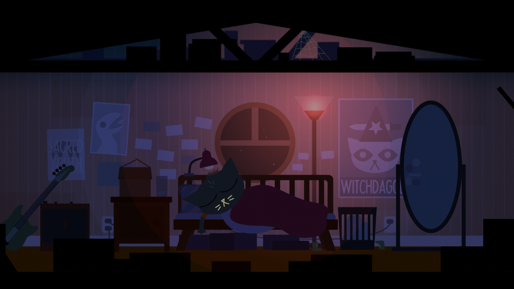

Day 0 - Bus Station

Description & Properties:
_____
Description:
N/A
File Name:
N/A
S.S.I.D:
N/A
Timeline:
Generic
File Size:
N/A
Coordinates:
0, 0
DOWNLOAD
Act 1 - Home Again
Act 2 - Weird Autumn
Act 3 - The Long Fall
Act 4 - The End Of Everything
Epilogue - Stars